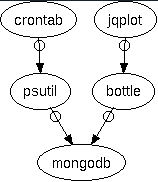
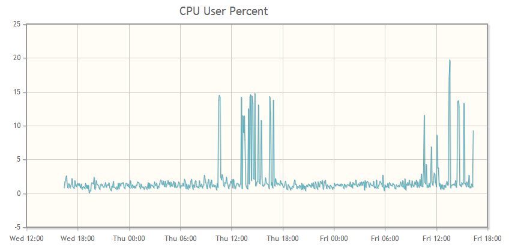

This how-to article describes how you can create a set of charts for monitoring the load on one or more servers. It uses Python (psutil and bottle), MongoDb, and jquery. The general idea is the same no matter if you use a different database or web framework.
At the end of the process, you will have a web page for each machine that displays charts showing cpu, memory, and disk usage.
I need to watch a couple of FreeBSD machines to make sure they're healthy and not running into memory or disk space issues. Their names are, for the purposes of the article, example01 and example02.
Note: These happen to be the same machines that run the MongoDB replica set and one of them runs the web server. There is no reason they all have to be the same machines--you can have MongoDB running on completely different machines than the ones you want to monitor. The same is true for the web server--it can be on any machine, not necessarily one you're monitoring.
I don't want to go to each machine and run top or ds to find out what's going on, I want a web page with up-to-date charts that I can glance at, one page per machine.
The overall workflow follows these three steps:
- Get the system data into MongoDB (
psutilandcron). - Set up a web server to query the MongoDB server (
bottle). - Write a short HTML page to display the data (
jqplot+ AJAX).

You can get all the code in the GitHub project psmonitor. I use snippets of that code in this article.
In the first part, you use the psutil Python package inside a cron job to write system load information to a capped collection in MongoDB every 5 minutes. The 5 minutes is totally arbitrary--you can pick whatever period you like. With the systems I'm looking at, a few minutes provides a fine enough granularity. This part puts the data into MongoDB.
In the second part, the bottle application makes a request to MongoDB and responds with the JSON data. This creates the broker between the client HTML page and the MongoDB data.
In the third part, you have an HTML file corresponding to each machine you want to monitor. The file loads jqplot and makes an AJAX request to the bottle application. This part is the reason for the exercise--we get the time-series chart of the load data that we've stored in MongoDB.
This is an example of one of the charts we will create:

You can make charts for any data you want. The charts I use for each machine are:
- cpu user percent
- cpu system percent
- cpu irq
- cpu nice percent
- disk space free
- memory free
Part 0: Get the Tools
The following tools are the ones to install for this implementation, but you can use a different database or web framework if you already have one.
The psutil Python package is a great cross-platform tool for system monitoring. Read more about it on its project page. You can install it with pip.
The NOSQL database mongoDB is an open-source document database. If you have data that naturally fits a JSON-style structure, mongoDB is a great fit for data storage. It has become a natural tool for me anytime I find I need a JSON store. The funny thing is, the more I use it, the more I find new uses for it. The structure of a MongoDB document is suprising useful and can provide a map for lots of information types.
The bottle web framework is a tiny framework written in Python with no other dependencies. You can install it with pip. You can use the included development server to get things going and put it under a different backend server later. I put mine under my Apache server once I got things like I wanted them. I'll write an article about that setup later on.
The jqplot jquery plugin makes producing the charts easy, plus they look good and they are all uniform so it easy to compare charts. For example, it is easy to see on the chart when a process spins up because you can see the spike for cpu and memory at the same moment, which is the same x-axis location for both charts. There is a lot more you can do with this plugin, this exercise just scratches the surface.
Part 1: Get the Data
We want to create a data structure that follows this pattern. You can add or remove any data that psutil supports in this step. The end point is the user, who will be looking at a jqplot chart, so it is good to keep that data structure in the back of your mind. What jqplot will want is a list of two-element lists, one of which is a datetime, something like this:
[[datetime1, y-value1], [datetime2, y-value2], and so on.]
That structure isn't the most efficient way to gather the data, but it's always important to remember where you're going. We'll gather the data and then change the structure to give jqplot the structure it needs.
As my first step I wasn't sure of what I needed and would use and I had a few more measurements. I figured that as time went by and I saw the actual needs of the machine this would change, and it could be easily changed.
{
'server': servername,
'datetime': datetime.now(),
'disk_root': ,
'phymem':,
'cpu': {'user':, 'nice':, 'system':, 'idle':, 'irq':,},
}
What follows is the python code for getting data from the system (using psutil) into the MongoDb database. I created a collection in MongoDb for each machine to be monitored.
You could create a single document in MongoDb that contains data for each machine; it depends on your needs. Since I want a separate page for each machine, I divided the data in the same way. You might want the data for all machines in one document if you want to render one page with charts for all the machines.
About the MongoDB Collection.
I have a three-member MongoDB replica set named rs1. The machines that hold the data happen to be the same ones I am monitoring, example01 and example02.
The third member is an arbiter and doesn't keep the data. These mongoDB servers don't have to be the ones that are monitored, they could be anywhere.
I have a database called reports and it is in that database we will put the new collections. For each machine we will have one collection to contain its load data:
With 1440 minutes per day, sampling every 5 minutes, and keeping two days worth of data, we'll need 576 records (documents)
(1440/5)*2 = 576 records per server
I wasn't sure how much data I would eventually use, so I estimated 2k per document. I estimated a generous size for the documents because this is just a start and I may want to gather more data later on. Turns out that 2k is extremely generous. The average size of a record is around 200 bytes but I haven't included any networking data (and disk space is cheap).
576 documents @ 2048 bytes per doc = 1,179,648 bytes
For each machine to be monitored, I created a capped collection with a maximum size of 1179648 and a maximum number of 576 documents:
use reports
db.createCollection('example01', {capped:true, size:1179648, max:576})
db.createCollection('example02', {capped:true, size:1179648, max:576})
By using a capped collection, we are guaranteed that the data will be preserved in insertion order, and old documents are automatically removed as time goes by so we always have the latest 48 hours of data.
The Data Gathering Code
First, do the necessary imports and make the connection to the MongoDb instance.
from datetime import datetime
import psutil
import pymongo
import socket
conn = pymongo.MongoReplicaSetClient(
'example01.com, example02.com',
replicaSet='rs1',
)
db = conn.reports
Now call psutil for every piece of data you want.
def main():
cpu = psutil.cpu_times_percent()
disk_root = psutil.disk_usage('/')
phymem = psutil.phymem_usage()
Create a dictionary to contain the data in the time-series structure you need.
doc = dict()
doc['server'] = socket.gethostname()
doc['date'] = datetime.now()
doc['disk_root'] = disk_root.free,
doc['phymem'] = phymem.free
doc['cpu'] = {
'user': cpu.user,
'nice': cpu.nice,
'system': cpu.system,
'idle': cpu.idle,
'irq': cpu.irq
}
Finally, add that dictionary as a document into the corresponding MongoDb collection. It is converted to a BSON document when it is inserted into the database, but the structure is the same.
if doc['server'] == 'example01.com':
db.example01.insert(doc)
elif doc['server'] == 'example02':
db.example02.insert(doc)
There you have the code to get the data and the database collections in which to store it. All that's left to do for this part is to automatically run the code:
Set up a cron job to run the script every 5 minutes on each server you want to monitor:
*/5 * * * * /path/to/psutil_script
Each mongoDB collection contains 48 hours of system performance data about the corresponding server; you can set it and forget it.
Part 2: Set up the bottle Server
Create a bottle application to query the mongoDb collection.
Connect to MongoDb. On receipt of a request for server data, return the formatted data for the appropriate server in the response.
from bottle import Bottle
import pymongo
load = Bottle()
conn = pymongo.MongoReplicaSetClient(
'example01.com, example02.com',
replicaSet='rs1',
)
db = conn.reports
This is a route, a url connection. When a request comes in, get the servername from the url (<server>) and create and return the proper data structure (the structure that jqplot will need).
@load.get('/<server>')
def get_loaddata(server):
data_cursor = list()
if server == 'example02':
data_cursor = db.example02.find()
elif server == 'example01':
data_cursor = db.example01.find()
disk_root_free = list()
phymem_free = list()
cpu_user = list()
cpu_nice = list()
cpu_system = list()
cpu_idle = list()
cpu_irq = list()
for data in data_cursor:
date = data['date']
disk_root_free.append([date, data['disk_root'])
phymem_free.append([date, data['phymem'])
cpu_user.append([date, data['cpu']['user']])
cpu_nice.append([date, data['cpu']['nice']])
cpu_system.append([date, data['cpu']['system']])
cpu_idle.append([date, data['cpu']['idle']])
cpu_irq.append([date, data['cpu']['irq']])
return {
'disk_root_free': disk_root_free,
'phymem_free': phymem_free
'cpu_user': cpu_user,
'cpu_irq': cpu_irq,
'cpu_system': cpu_system,
'cpu_nice': cpu_nice,
'cpu_idle': cpu_idle,
}
Part 3: Display the Data with jqplot
The HTML Page
The HTML is very simple.
- Read in the stylesheet.
- Write the
divto hold each chart. In the example below I display only thecpu_userdata. The pattern is the same for all the variables. - Load the javascript.
You can put the javascript from psmonitor.js directly into the page or call it as a file (as shown in the example).
<!doctype html>
<html>
<head>
<meta charset="utf-8">
<title>Load Monitoring</title>
<link rel="stylesheet" type="text/css" href="/css/jquery.jqplot.css" />
<style>div {margin:auto;}</style>
</head>
<body>
<div id="cpu_user" style="height:400px;width:800px; "></div>
<script src="http://code.jquery.com/jquery-latest.min.js" ></script>
<script type="text/javascript" src="/js/jquery.jqplot.js"></script>
<script type="text/javascript" src="/js/jqplot.json2.js"></script>
<script type="text/javascript" src="/js/jqplot.dateAxisRenderer.js"></script>
<script type="text/javascript" src="/js/jqplot.highlighter.js"></script>
<script type="text/javascript" src="/js/jqplot.cursor.js"></script>
<!--[if lt IE 9]>
<script language="javascript" type="text/javascript" src="excanvas.js"></script>
<![endif]-->
<script type="text/javascript" src="/js/psmonitor.js" />
</body>
</html>
The JavaScript (jqplot) Code
The complete code is in the GitHub project, but here is a snippet of how jqplot is set up to show the data. The machine example01 runs the web server that will return the json load data. Again, the web server could be on any machine; in my example, it happens to be one of the machines being monitored.
The code follows the same pattern for each plot:
- Make the AJAX call to the server that is running the
bottleapp. - Put the data you want to chart into a variable.
- Pass the variable to
jqplot.
The url in the code contains the string 'example01':
url: "http://example01/load/example01"
The first instance of example01 is addressing the web server since that is the machine running the bottle app. The second instance is the name of the machine we want the data for. That is the server name (<server>) that is passed to the bottle route (get_loaddata) for retrieving the MongoDB records (documents).
$(document).ready(function(){
var jsonData = $.ajax({
async: false,
url: "http://example01/load/example01",
dataType:"json"
});
var cpu_user = [jsonData.responseJSON['cpu_user']];
$.jqplot('cpu_user', cpu_user, {
title: "CPU User Percent: EXAMPLE01",
highlighter: {show: true, sizeAdjust: 7.5},
cursor: {show: false},
axes:{xaxis:{renderer:$.jqplot.DateAxisRenderer,
tickOptions:{formatString:"%a %H:%M"}}},
series:[{lineWidth:1, showMarker: false}]
});
});
This javascript plots the CPU user percent; you can add the other plots in exactly the same way, changing only the variable name and the title.